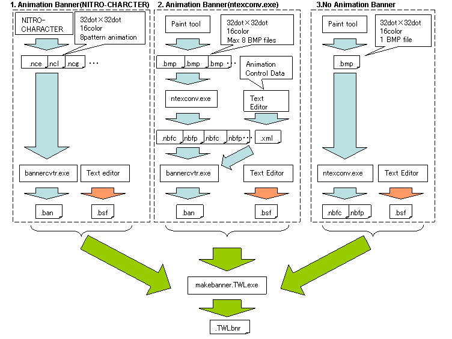

TWL 本体や DS/DS Lite 本体のランチャー画面で表示するバナーファイルの概要です。
TWL 本体で表示するTWL バナーは、DS/DS Lite 本体で表示するNTR バナーのフォーマットに アニメーションデータを付加したものになっています。 そのため、TWL バナーをDS/DS Lite 本体やDS ダウンロードプレイで表示するとNTR バナーと同様静止画で 表示されますが、TWL 本体で表示するとアニメーションが表示されます。
またTWL のユーザーNAND アプリにおいては、通常のバナーの他にサブバナーと呼ばれる、
別のバナーを表示することができます。サブバナーについては、
サブバナーの概要を参照してください。
NTR バナーとTWL バナーでは以下のようにフォーマットが異なっています。
NTR バナー
| バナーコメント | 各言語のゲームタイトル名 |
| バナーアイコンのBitmap | 32x32 ドット 1枚 |
| バナーアイコンのカラーパレット | 16色 1セット |
TWL バナー
| NTR バナー | 上記と同じデータ |
| アニメーション用のBitmap | 32x32 ドット 8枚 |
| アニメーション用のカラーパレット | 16色 1セット |
| アニメーション制御データ | 1〜255フレームを64個の制御データで管理 |
TWL バナーはNTR バナーを持っているため、DS/DS Lite 本体ではNTR バナーが表示され、TWL 本体ではアニメーションが表示されるようになっています。
バナーファイルを作成する方法は以下の３つの方法があります。 但しニンテンドーDS 専用ソフトのバナーを作るには、3.ntexconv を使用する方法（静止画）を使用してください。

NITRO-CHARACTER を使用してTWL バナー用のセルアニメーションデータ(*.nce )を作る方法は、
NITRO-CHARACTER を使用したバナー作成手順をご参照ください。
NITRO-CHARACTERで作成した*.nce をbannercvtr で変換します。
bannercvtr で出力されたデータとバナーコメントを設定したbsf ファイルをmakebanner.TWLで変換することで
TWL バナーが作成されます。
16色で構成される32 x 32 ドットのビットマップを最大8 枚用意します。
そのビットマップをntexconvで変換します。
変換したデータとアニメーションの内容を記述した XML ファイルを作成し、
bannercvtrで変換します。
bannercvtr で出力されたデータとバナーコメントを設定したbsf ファイルをmakebanner.TWLで変換することで
TWL バナーが作成されます。
XML ファイルの記述方法の詳細はbannercvtr を参照してください。
NTR バナー やアニメーションしないTWL バナーを作成する方法です
16色で構成される32 x 32 ドットのビットマップを1 枚用意します。 そのビットマップをntexconvで変換します。
ntexconvで出力されたデータとバナーコメントを設定したbsf ファイルを,
ニンテンドーDS 専用ソフトの場合はmakebannerで、
TWL 対応ソフトの場合はmakebanner.TWLで変換することで
バナーファイルが作成されます。
ROM スペックファイル *.rsf に作成したバナーを指定します。 makerom, makerom.TWL によって 生成した *.srl ファイルに指定したバナーが設定されます。
# ROM SPEC FILE Property { .... # # BANNER FILE: generated from Banner Spec File # BannerFile banner.bnr }
詳細はmakerom, makerom.TWL を参照してください。
$TwlSDK/build/demos.TWL/tips/TWLBanner_anim1
$TwlSDK/build/demos.TWL/tips/TWLBanner_anim2
NTR バナーの作成方法
$TwlSDK/build/demos/tips/NTRBanner
TWL バナーの作成方法
$TwlSDK/build/demos.TWL/tips/TWLBanner_image
バナー内のゲームタイトルについては、makebanner.TWL ,
makebanner で表示可能な文字のチェックと
文字の横幅がTWL 本体や DS/DS Lite 本体の表示枠からはみ出すことがないかチェックしています。
ゲームタイトルの正常表示はプログラミングガイドラインで規定されていますので、
警告が表示された場合は修正してください。
addbanner ツールを使用するとカードを使用することなく、
バナーを確認することができます。
但しカードアプリの表示のみ対応しており、ユーザーNANDアプリでは表示は若干異なりますので、以下の方法を参照してください。
以下にaddbanner 以外の方法をご説明します。
ROMをFlash カードに焼いて、DS/DS Lite 本体に差して確認します。
IS-NITRO-DEBUGGER でROMを実行した後、[ツール]-[ゲームバナー]で確認することもできます。
ROMをFlash カードに焼いて、TWL 本体や IS-TWL-DEBUGGER に差して確認します。
製品版のTWL 本体に差した場合、アプリの起動はできませんがバナーを確認することは可能です。
ROMをFlash カードに焼いて、DS/DS Lite 本体に差して確認します。
ROMをFlash カードに焼いて、開発用のTWL 本体や IS-TWL-DEBUGGER に差して確認します。
製品版のTWL 本体に差してバナーを確認することはできません。
ROMをFlash カードに焼いて、開発用のTWL 本体や IS-TWL-DEBUGGER に差して確認します。
製品版のTWL 本体に差してバナーを確認することできません。
TwlNmenu で、開発用のTWL 本体や IS-TWL-DEBUGGER にtadをインポートして確認してください。
また本体設定のソフト管理画面でのバナー表示をあわせてご確認ください。
ソフト管理画面のアイコン表示は、ランチャーでの表示と同じですが、バナーコメントは表示される文字数に制限があります。
文字数が枠からはみ出る場合は「...」と表示されますのでご注意ください。
DS とTWL のランチャーで表示されるバナーコメントの文字数は以下のようになります。
| DS ランチャー | TWL ランチャー | TWL ソフト管理画面 | |
|---|---|---|---|
| 領域幅 | 140px | 240px | 202px |
| W 最大文字数 | 23 | 17 | 16 |
| M 最大文字数 | 23 | 20 | 19 |
| w 最大文字数 | 23 | 20 | 19 |
| i 最大文字数 | 69 | 80 | 64 |
ntexconv,
bannercvtr,
makebanner.TWL,
makebanner,
addbanner,
サブバナー (overview),
その他のサンプルデモ - Tips,
NITRO-CHARACTER を使用したバナー作成手順
2009/03/27 図の修正。誤記の修正と内容が古い箇所を削除
2009/03/10 TWL バナーのカラーパレットについて修正、IS-NITRO-DEBUGGERでのバナーの確認方法を追記
2008/11/28 NITRO-CHARACTER の使用法を別ページに移動
2008/11/11 addbanner TWL対応に伴い修正
2008/10/20 最大文字数修正。確認方法について追記
2008/09/29 ビルドサンプルについて追記
2008/09/26 ソフト管理画面について追記
2008/09/25 初版